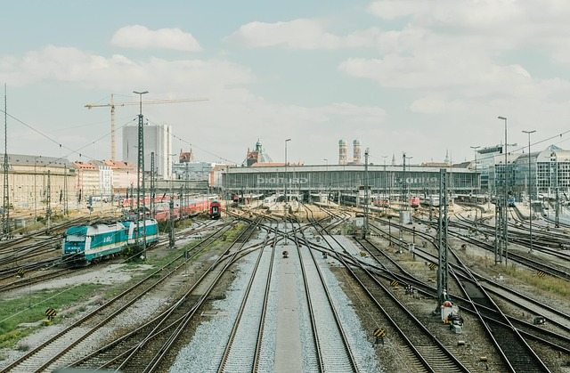

Exploreing Istanbul's Headen gems
Istanbul blends East and West with ancient markets, majestic mosques, and cozy cafes. Our 3-day journey took us through the historic Sultanahmet district and the bustling Grand Bazaar.

Istanbul blends East and West with ancient markets, majestic mosques, and cozy cafes. Our 3-day journey took us through the historic Sultanahmet district and the bustling Grand Bazaar.